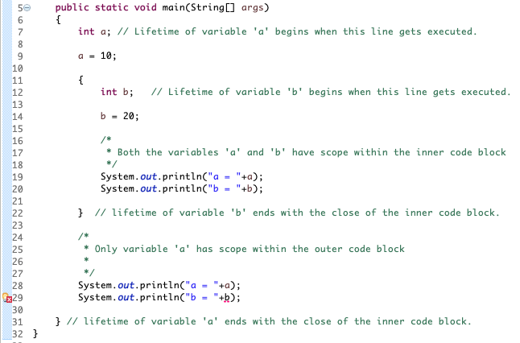

Scope - Places in the program where the variable can be accessed is called the scope of the variable. Lifetime - The duration for which a variable exists during the execution of the program is called its lifetime. 